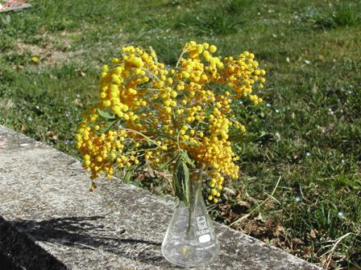
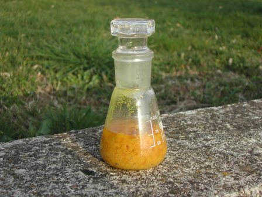
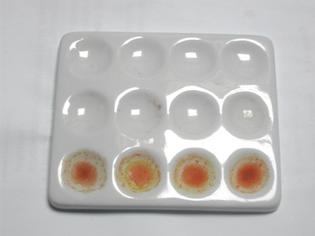
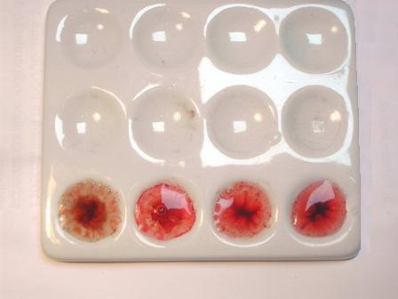
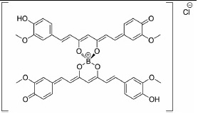

Qualche tempo fa, parlando dell'acido borico (post n. 365) dicevo alla fine che avrei sperimentato un inconsueto metodo di ricerca analitica di quest'acido, ma che l'avrei potuto fare solo in primavera; avrei dovuto dire più precisamente: "DOPO LA FESTA DELLE DONNE".
Siccome tutto il mio blog ruota attorno alla chimica "storica" (la chimica "delle frecce curve" e degli "apparecchi con la spina" non è una chimica affascinante per me...), ascoltate ciò che dice il prof. Molinari e capirete come si possano tirare in ballo le donne, la loro festa, la primavera, l'acido borico, eccetera.
- da: Ettore Molinari - Trattato di Chimica Generale applicata all'industria - Vol. I . Chimica Inorganica - Hoepli 1918 - A pag. 684 si legge:
- ...L.Robin (1913) scopre anche 0,000027 mgr. di acido borico con estratto alcolico di fiori di mimosa, la miscela reagente si addiziona: 1-2 goccie di NaOH diluita pura, poi la soluzione divenuta così gialla si scolora con 2-3 goccie di ac. cloridrico diluito e si evapora a bagno maria, si inumidisce il residuo con ammoniaca conc. e allora si ottiene una colorazione rosa sino a rosso sangue...-
La parola "mimosa" ha svelato ogni correlazione con le donne, vero? Sono lustri che io chiamo l'otto marzo "festa dei fioristi" e sono sicuro di non sbagliare visto l'attuale prezzo al centimetro dei rametti della slendida Acacia dealbata; in ogni caso quest'anno il rametto è entrato in casa mia anche con un secondo fine, assai più prosaico dell'omaggio alle donne, che spero mi perdoneranno per il pensiero un po' interessato.
(La chimica sperimentale fa di questi terribili effetti vista dal di fuori, ne convengo).


Per farla breve: passato l'otto marzo e svanita sia la festa che i fiori di mimosa, ho preparato un estratto alcolico dei medesimi e qualche soluzione a diluizione crescente (1 g/l e 100 mg/l e altre di acido borico H3BO3) ed ho eseguito il test di Robin come citato dal Molinari.
Grazie a San Google (per quanto lo si ringrazi non sarà mai abbastanza) avevo anche trovato il seguente estratto bibliografico a corroborazione del primo, che anche in questo caso è un semplice trafiletto:
WILFRED W. SCOTT
A MANUAL OF ANALYTICAL METHODS...
NEW YORK 1917
Traduco: -"Prova di Robin per il boro. Ad alcune gocce di soluzione acquosa in esame (leggermente acidificata con HCl) si aggiungono due gocce di tintura di fiori di mimosa e la miscela è evaporata a secchezza a bagnomaria. Il residuo viene trattato con ammoniaca diluita, al che in presenza di acido borico si sviluppa un colore dal rosa al rosso sangue in funzione della quantità presente. L. Robin sostiene che meno di 0,0001 milligrammi possono essere rilevati in presenza di nitrati, cloruri, ioduri o calcio solfato. Acidi organici e fosfato di sodio interferiscono. Il reagente viene preparato dall'estrazione dei fiori di mimosa con alcool etilico e l'estratto viene conservato protetto dalla luce".
I risultati delle prove (ne ho fatte molte) si vedono sulla piastrina a pozzetti, tenendo presente che dopo l'evaporazione a secchezza rimane un residuo solido marroncino dell'estratto colorante (anche nella prova in bianco ovviamente) che disturba un po'.
Ho condotto il test in questo modo: in ciascun pozzetto 5 gocce di soluzione contenente il boro (nel primo pozzetto acqua distillata come bianco), una goccia di tintura di mimosa e una di HCl molto diluito.
Dopo l'evaporazione ho aggiunto velocemente ad ogni pozzetto mezzo ml di ammoniaca al 20%; la colorazione rosso sangue è istantanea ma dura poco, dopo un minuto già svanisce.

A secco, dopo evaporazione, i pozzetti sembrano quasi uguali

Dopo l'aggiunta di ammoniaca. Da sinistra a destra: prova in bianco, 100 mg/l, 1 g/, 2 g/l di H3BO3 - Il colore rosso non appare nel pozzetto di sinistra ma è arancio, la foto è poco fedele. Anche con quantità inferiori a 100 mg/l la colorazione rossa è evidente in presenza di boro.
...°°°OOO°°°...
Ho provato anche a fare molti dei test "a umido", cioè senza la noia dell'evaporazione; la reazione avviene comunque ma è meno sensibile.
Col primo metodo si svelano veramente tracce di boro, col metodo a umido già 100 ppm di H3BO3 sono al limite.
Faccio notare comunque che con 100 mg/l di H3BO3 la quanttà di boro elemento in 5 gocce è circa 0,009 milligrammi (!), e ciò basta a capire che la sensibilità del test di Robin è effettivamente grandissima.
Visto che bello?
Nonostante abbia cercato con discreto impegno, non sono riuscito a stabilire di che tipo sia il colorante dei fiori di mimosa.
Visto però che un reattivo importante e storico dell'acido borico è anche la curcuma (anch'essa gialla), mi viene il fondato sospetto che anche la mimosa contenga un colorante curcuminoide, e che il colore rosso prodotto sia un parente (ma potrei sbagliarmi) della rosocianina, formata dal complesso della curcumina con il boro.

La formula della curcumina, con tutti quei doppi legami coniugati (deve essere un colorante per forza!) si deduce dalla rosocianina qui sopra; della formula della "mimosina" (nome di fantasia inventato sui due piedi) non ho finora notizia documentata, se non che il metodo funziona, che mi sono divertito a farlo e che lo dedico alle donne (così poco apprezzate in qualche altro ambiente "chimico") che casualmente e pazientemente leggessero fin qui.
Bravo sconosciuto L.Robin! Un riconoscente ammiratore ti manda un apprezzamento dopo un secolo abbondante... scommetto che non te lo aspettavi!